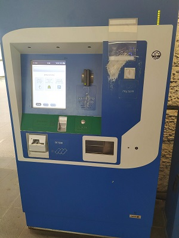
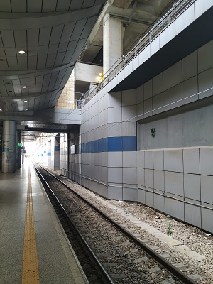
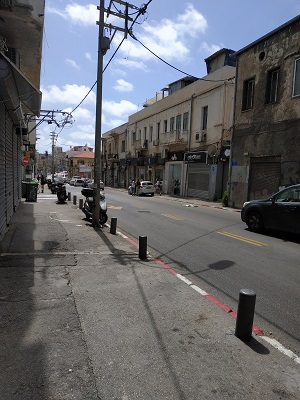

Our common sense were telling us that it wasn't a good idea to go to Israel at first days of May. Prices for flights, hotels, transfers were higher than usual because of May's holidays in Russia, a day of Independency in Israel and Shabbat - we landed on Friday and had a return flight on Saturday. However, we wanted to had a holiday, really WANTED. Besides May is the perfect month for having a rest in Israel because of the warm weather and quite warm water.
We prepared to spand more money, than we would like and overcome some inconviniences. Fortunately, all anxieties were useless. There was a tourist information center at the airport and while we were asking for a city map and taxi service, we found out that we could take a last Friday's train from the airport to Tel-Aviv. After some minutes we bought two tickets, payed by cards, withdrawn some cash (lately we understood that almost for everything is possible to pay by card) and boarded the train.



We arrived to HaHagana, the nearest train station to historic centre of Tel-Aviv and to our apartment. There wasn't a point to take a taxi, so we reached our apartment by foot. The distance was approximately 2 km through narrow, atmospheric and sometimes overloaded streets. This way not for a grumpy person, think carefful who you are goint to travel with.
Apartment looked like on photos on AirBnb, may be even better. I'm not sure if I would like to book something on that site again, will tell you about my experience in a section "Our home in Tel-Aviv".
After having a rest, our study of neighborhood began. First aims were: to eat something, find AM:PM - 24/7 a chain of supermarket that work even in Shabbat. Then, to go to the beach.
Summaries:
1 – Even if there is no information about transport timetable in the Internet, it's a good idea to ask at touristic center
2 – Cash isn't necessary in Israel. But it could be easy withdrown from an ATM